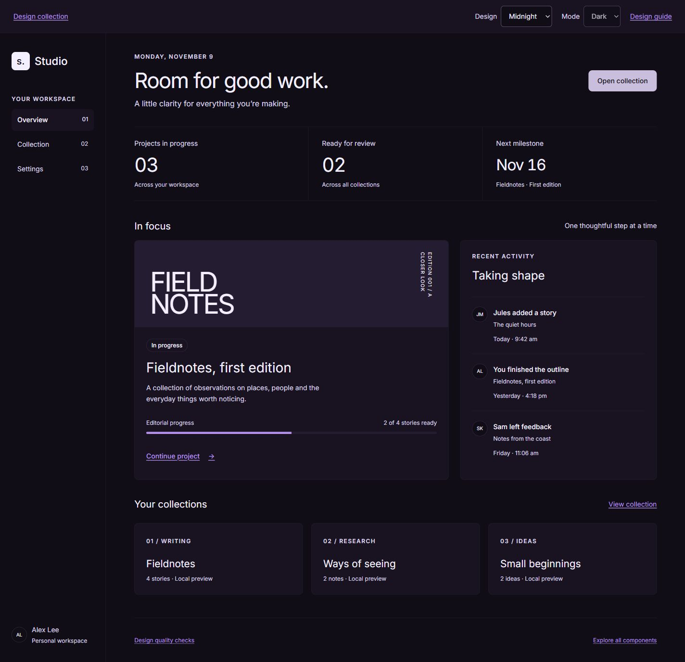
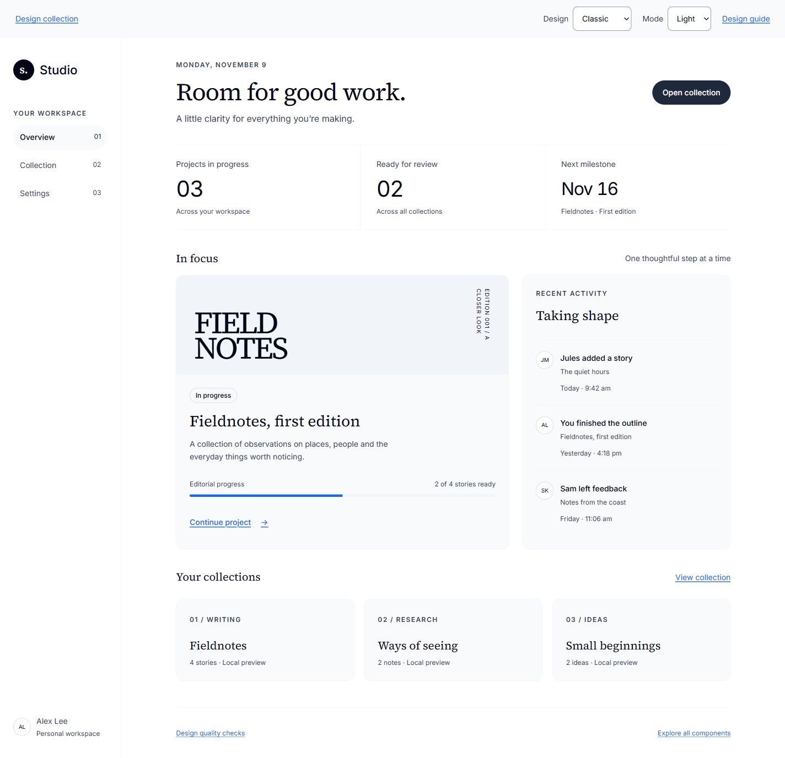
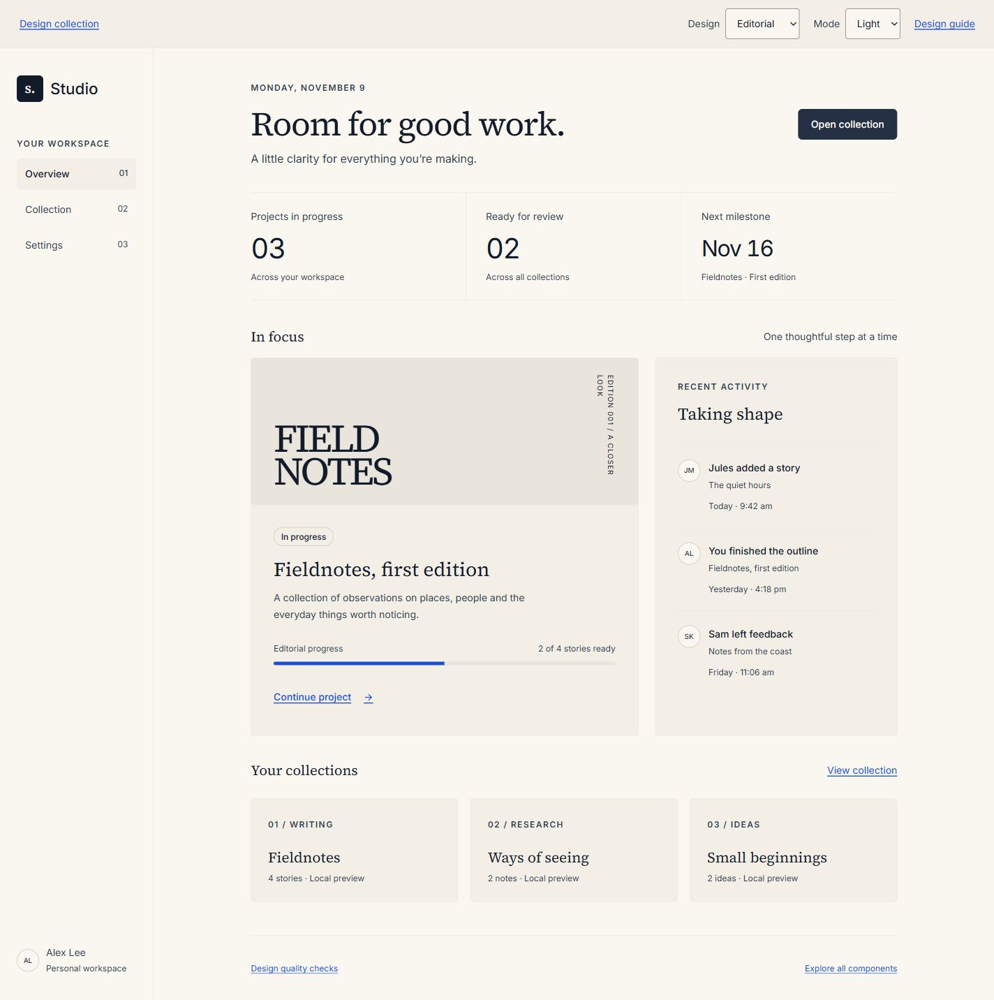
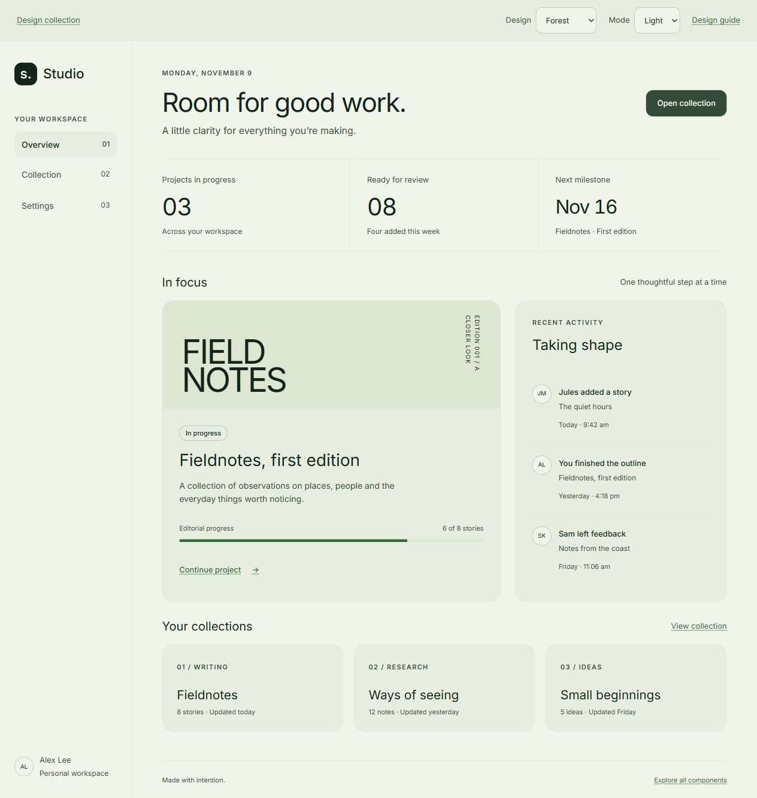
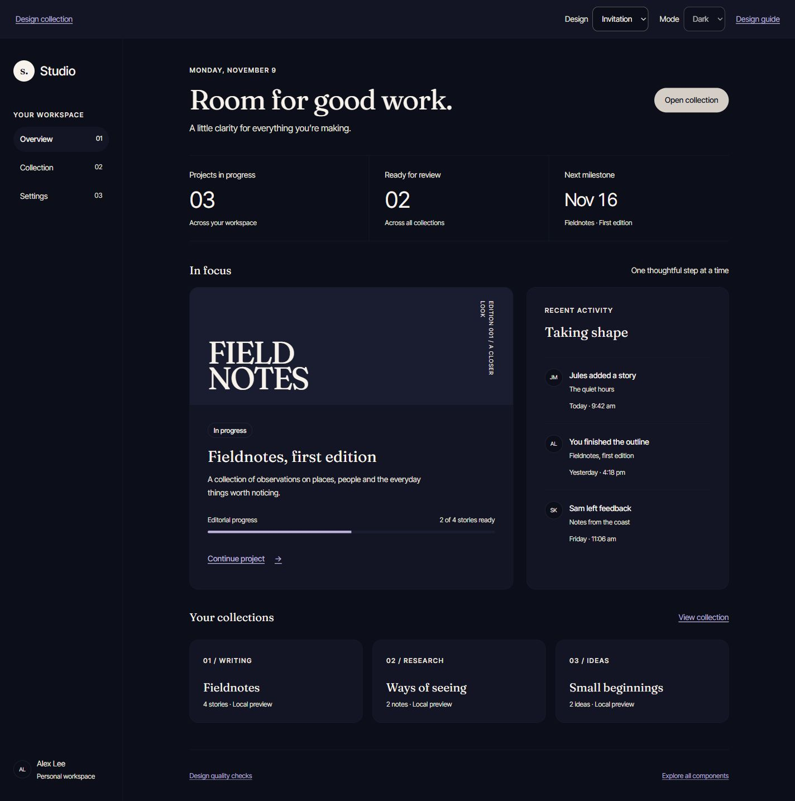

Midnight
A dark-only plum workspace, lavender links and compact geometric controls.
Collection default · Dark only
Explore Midnight
5 complete designs. The same working app, with different color, type and shape. Start with Midnight or explore another direction.
Try MidnightA dark-only plum workspace, lavender links and compact geometric controls.
Collection default · Dark only
Explore Midnight
The original white-and-slate foundation, with editorial headings and a dark counterpart.
Light and dark
Explore Classic
Warm paper, slate ink and restrained lavender; a quieter reading-focused design.
Light and dark
Explore Editorial
Sage surfaces, deep evergreen actions and softly rounded, practical layouts.
Light and dark
Explore Forest
Blue-black surfaces, warm off-white text and literary display typography.
Dark only
Explore Invitation